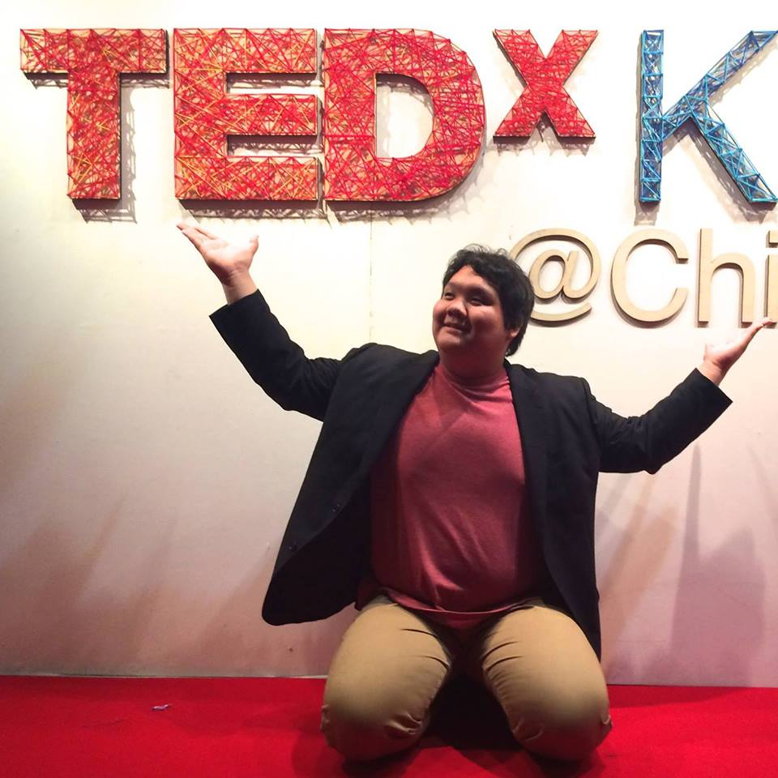
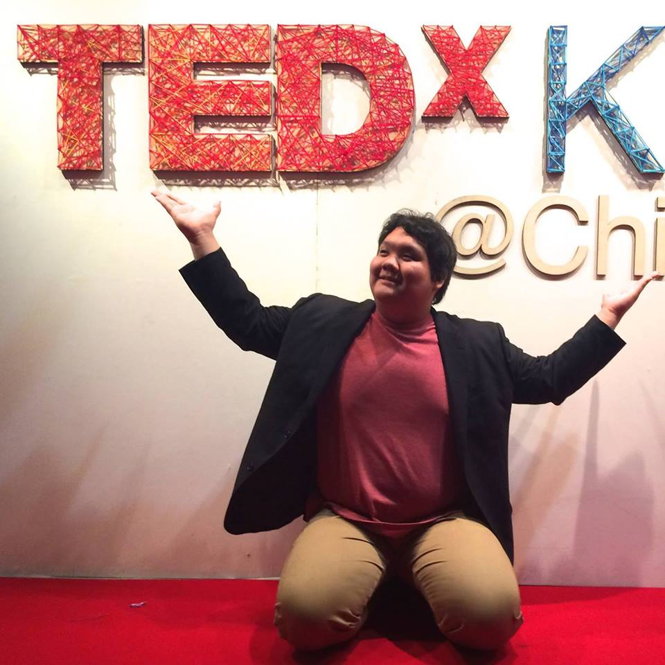
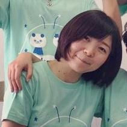
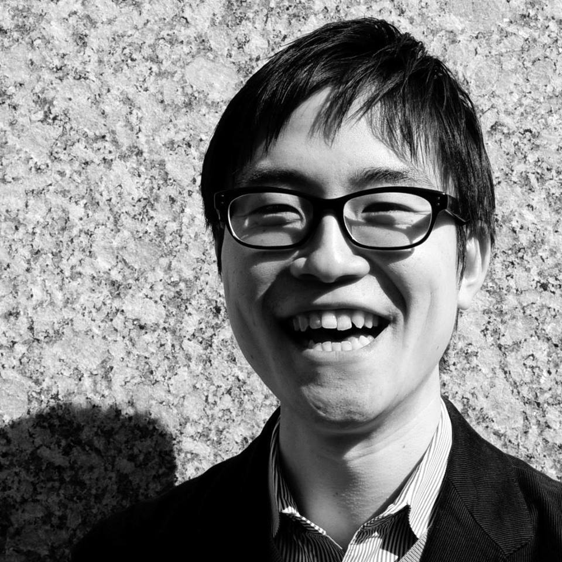
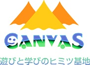
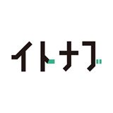
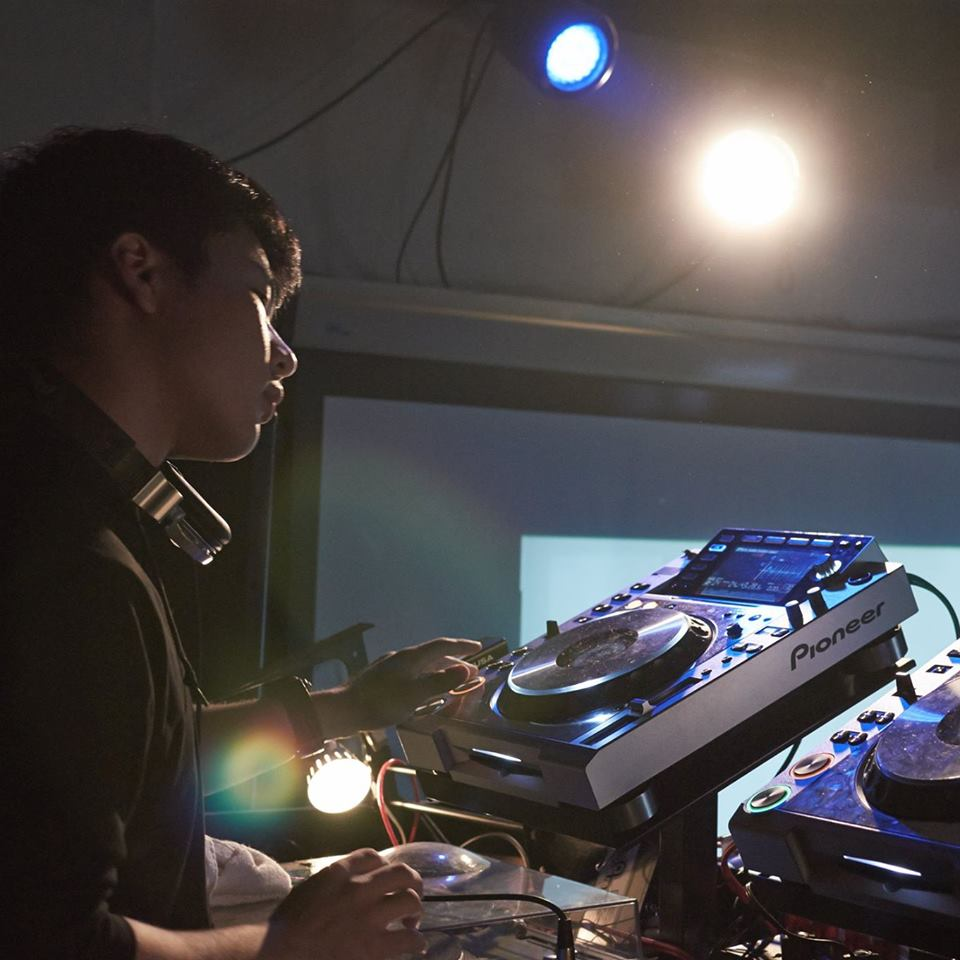

CoderDojo Kashiwaの1年間を振り返り、未来を考える会です
このカンファレンスはCoderDojo Kashiwaが始まって以来過去最大級のものになります。2014年5月に開催した1周年記念パーティーからはや1年が経過しました。
2014年、私たちはいろいろなことに挑戦してきました。それらの軌跡を振り返りつつ、次の1年間のビジョンなどをはなしあうカンファレンスになります。
日時：2015年6月7日（日）13:00-16:00
場所：NoblesseOblige
参加費：1000円（18歳以下無料）
また、カンファレンス終了後には懇親会も予定しています。こちらもぜひご参加ください。
タイムテーブル
当日のタイムテーブルです。
| 12:45 | 受付開始 |
| 13:00 | Session1 KeyNote 1年間の取り組みについて |
| 13:20 | Session2 【2-1】ゲストを交えたトークセッション 【2-2】高校生メンター鈴木貴也のプレゼン 【2-3】高校生メンターたちのトークセッション |
| 14:50 | 休憩・交流 |
| 15:20 | Session3 「未来」について ・2015年のビジョン |
| 16:00 | 閉会 |
【Session１】 KeyNote
2014年度の活動を報告します。
 

【Session2-1】
ゲストを交えたトークセッションを行います。プログラミング業界や教育業界などで活躍されている方々は、CoderDojo Kashiwaとどのような関わりがあるのでしょう。
登壇者：斉藤愛美 長井悠 CANVAS イトナブ 宮島衣瑛




【Session2-2】
高校生メンター兼DJの「すずこふ」こと鈴木貴也によるプレゼンです。Dojoに関わってほぼ１年。彼はどのような体験をしたのでしょう。
登壇者：鈴木貴也

【Session2-3】
高校生メンター全員による座談会です。私たちはDojoを通じてどのようなものを得たのでしょうか。また、その経験はどのような場面で役に立っているのでしょう。普段言わないような本音を語るセッションです。
登壇者：飯島巧 加藤遼 北原成貴 鈴木貴也 宮島衣瑛


【Session3】未来について
2015年度は一体どのようなことに挑戦していくのでしょうか。新しい取り組みやプロジェクトのリリースなどを行います。
ゲスト
今回のカンファレンスでは、昨年度の挑戦に関わってくれた様々な人たちが参加します。皆プログラミングや教育についてのエキスパートたちです。当日はゲストを交えてトークセッションをします。
ゲスト一覧
斉藤愛美 様 | クラウドット | 約一年前から長野県松本市を中心にスクラッチ定期イベント、iPhone・Webアプリ開発スクールや、夏合宿を開催するeducodeにて、スクラッチを担当。子供向けプログラミング教育について勉強しながら、月1〜2回スクラッチ定期イベントを運営。 | 昨年8月長野でWSを開催 |
長井悠 様 | ハバタク | 東京大学卒業。先攻は藝術学。IBMにてコンサルタントとして活動後、教育への問題意識を持ち、ハバタク株式会社を2010年に創業。国内外に5拠点を展開し、グローバル教育プログラムの開発・提供を行っている。 | 昨年7月からのOpenAquariumProjectなど協力 |
NPO法人CANVAS 様 | CANVAS | CANVASは2002年に設立されたこども向け創造・表現活動の普及を推進するNPO法人。 昨年はGoogleから支援をうけ、プログラミング学習普及プロジェクト「PEG」を主催。1年間で25000人の子どもたちにプログラミング学習の機会を提供。 | ScratchDayをはじめPEGプロジェクトで協力 |
イトナブ石巻 様 | イトナブ石巻 | 準備中 | 昨年12月に開催されたイトナブ発表会で宮島が登壇 |